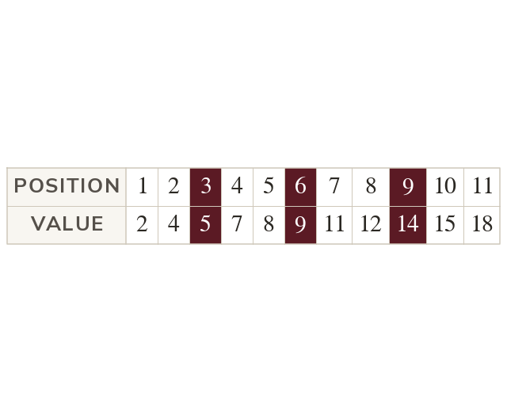
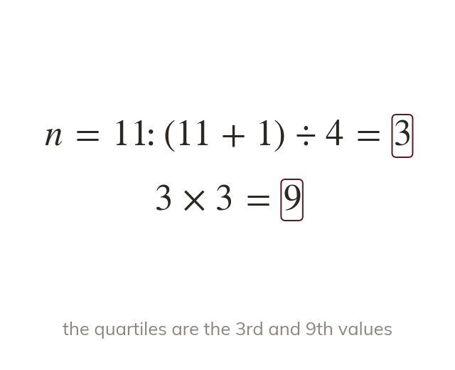
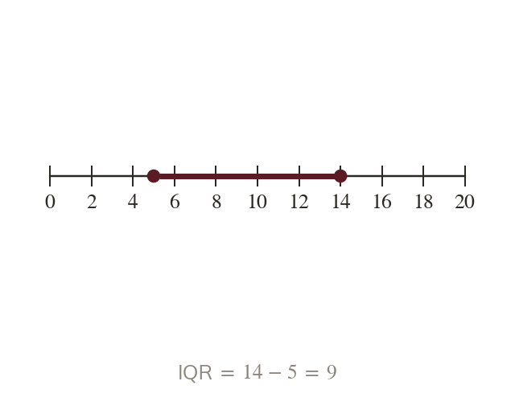
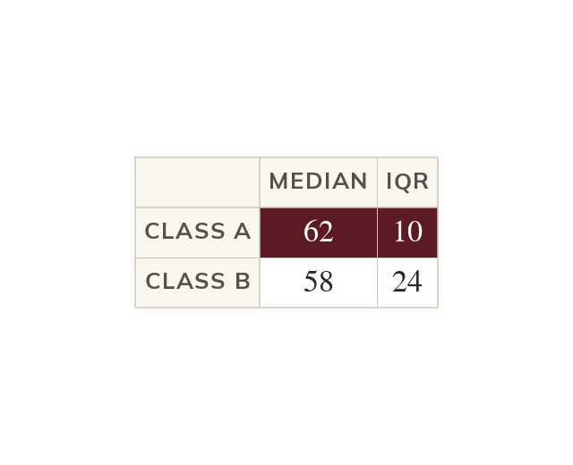
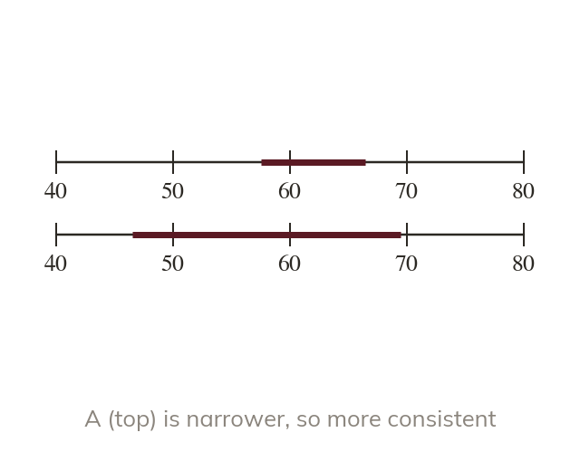
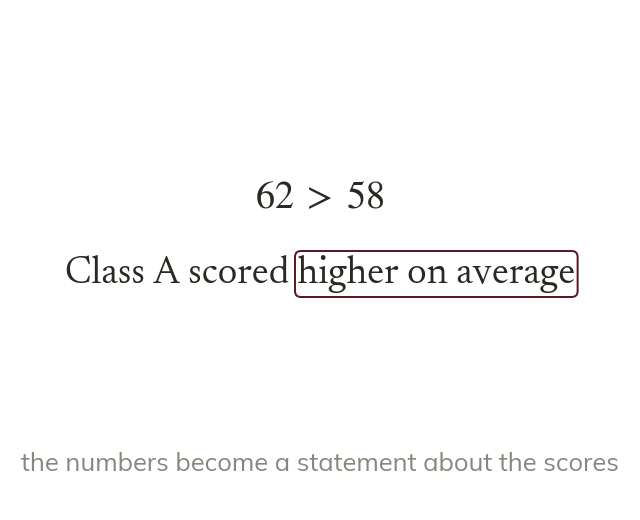

Quartiles cut the data into quarters
Quartiles split ordered data into four equal parts. A quarter of the values lie below the lower quartile.
Two classes can share a median and still have very different results. The interquartile range measures how spread out the middle half of the data is, and one extreme value cannot distort it.
Work down the page at your own pace. Write every answer in your book first, then click to check it.
Read each card, then follow the worked examples one step at a time.

Quartiles split ordered data into four equal parts. A quarter of the values lie below the lower quartile.

For values, the lower quartile is the value. The upper quartile is the value.

The interquartile range is the upper quartile minus the lower quartile. It measures the spread of the middle half.
Pick an answer. If it's wrong, the feedback tells you which mistake it was.
Read each card, then follow the worked examples one step at a time.

A fair comparison uses an average and a measure of spread. Here they are the median and the interquartile range.

The interquartile range shows how consistent the results are. A smaller one means more consistent, not better.

Each statement says what the difference means for the data. 'Class A scored higher on average' is complete.
Pick an answer. If it's wrong, the feedback tells you which mistake it was.
Finished? Next lesson: 10H.16.3 Filling in Cumulative Frequency Tables.
Log in, then search for a code to practise that skill.
Videos, worksheets and more on each part of this lesson.